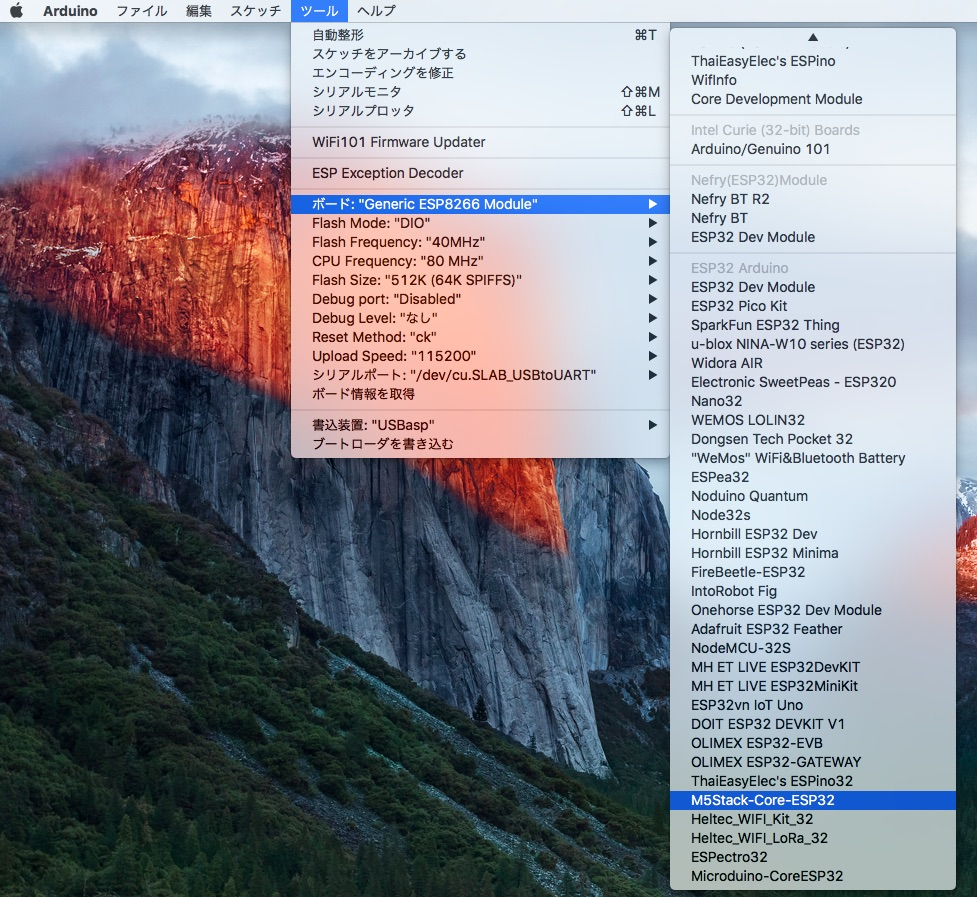
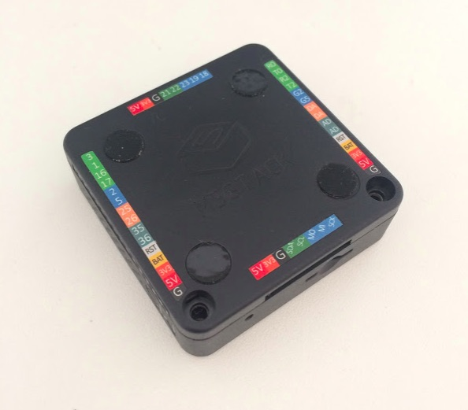
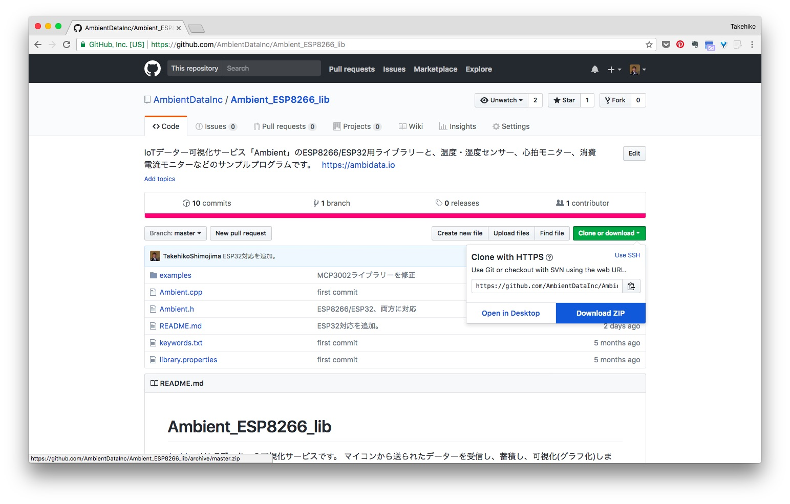
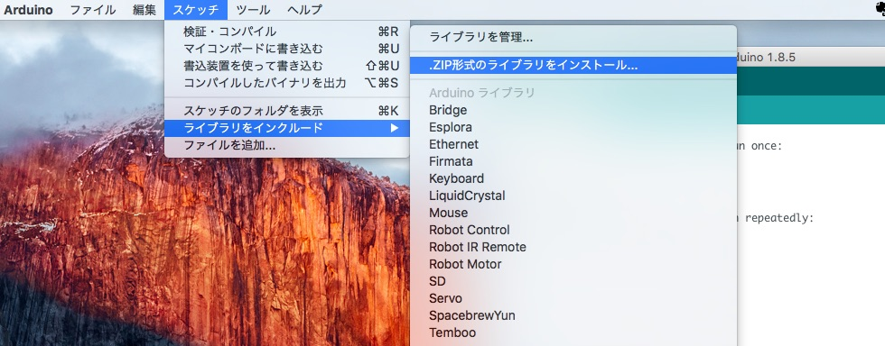
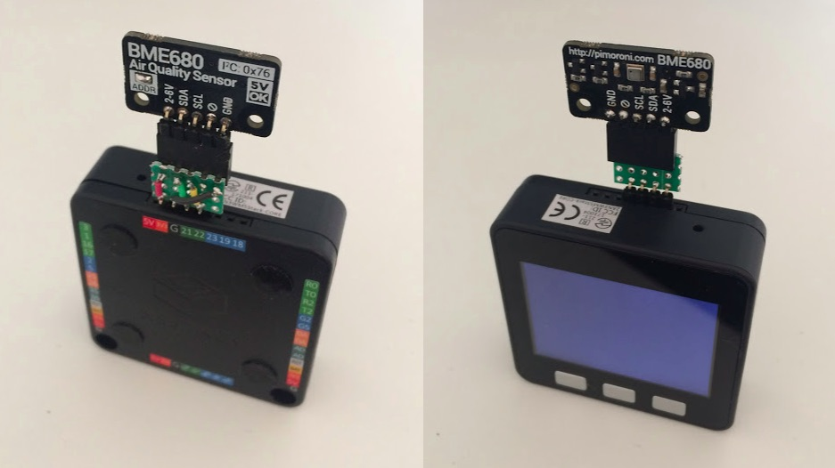

「AmbientでIoTをはじめよう」の第3回は最近スイッチサイエンスでも取り扱いを始めたM5Stackを使い、 センサデータをクラウドに送信して記録する事例を紹介します。
M5StackはArduinoとMicroPythonとEspressif社のESP-IDFという開発環境が使えます。 ここではArduinoで制御する例を紹介します。 MicroPythonで制御する例は「M5Stackでセンサデータを測定し、クラウドに送る (MicroPython編)」をご覧ください。

M5StackはEspressif社のマイコンESP32が搭載されたコンパクトなIoT端末です。 ESP32と電池、320 x 240 TFTカラーディスプレイ、microSDカードスロット、スピーカーなどが搭載されたM5Stack Basicがベースになる製品です。 ESP32が搭載されているのでWi-FiとBluetoothで通信でき、SPI、I2Cでセンサなどを制御できます。 5.4cm x 5.4cmのコンパクトなケースに入っていて、拡張モジュールを積み重ねることで機能を追加できます。
Basicの写真M5Stack Basicに加速度、ジャイロ、磁気を計測可能な9軸センサ、MPU9250を加えたM5Stack Gray（9軸IMU搭載）という製品や、 GPSモジュールやユニバーサル基板モジュールといった拡張モジュールがあります。
詳細は次のサイトをご覧ください。
公式サイトにWindows/Mac/Linuxでのインストール方法が解説されています。 ここでは簡単にMacでのインストールの流れを紹介します。
M5StackとUSBで通信するために、USBドライバ「SiLabs CP2104 Driver」をダウンロードしてインストールします。
公式サイトの説明に従ってESP32 Arduino Coreをインストールします。
M5StackとUSBで通信するために、USBドライバ「SiLabs CP2104 Driver」をダウンロードしてインストールします。
公式サイトの説明に従ってESP32 Arduino Coreをインストールします。
Arduino IDEのライブラリマネージャーを使うか、Gitを使う方法があります。 どちらかの方法でM5Stackライブラリをダウンロードします。
以上でArduinoの環境設定は終わりです。
設定したArduino環境とM5Stackの動作確認をします。 Arduino IDEを立ち上げて、

プログラムがダウンロードされ、M5Stackの画面が消え、「hello world」と出力されれば 環境設定はokです。

M5Stackのケースの底に近い部分にはBUS PORTとI/O PORTと呼ばれるスロットがあります。 BUS PORT、I/O PORTとも一方がピン、反対側がソケットで、向かい合うピンとソケットは同じ信号がでています。 ジャンパワイヤを使ってセンサなどをつなぐことができます。各ピン/ソケットの意味はシールに書かれています。
その中にI2C通信で使うSDA、SCLと3.3V、GNDがあるので、BME280モジュールをそこにつなぎます。 SDA、SCLは対向する側ではそれぞれ21、22と書かれていますが、同じ信号です。 この他にスイッチサイエンスのBME280モジュールにはSDOとCSBというピンがあります。 BME280をI2Cインタフェースで使う時はCSBを3.3Vに接続します。 SDOはI2Cアドレスを決めるのに使い、GNDに接続することでI2Cアドレスが0x76になります。
| M5Stack | BME280モジュール |
|---|---|
| GND | SDO |
| SCL(22) | SCK |
| SDA(21) | SDI |
| 3V3 | CSB |
| GND | GND |
| 3V3 | Vcore |
| ー | Vio |
必要な部品をまとめました。M5StackとBME280モジュールをつなぐケーブルは 「M5Stack Basic」に含まれています。
| 部品 | 個数 |
|---|---|
| M5Stack Basic | 1個 |
| BME280搭載 温湿度・気圧センサモジュール | 1個 |
| ピンヘッダL型1×40 | 1個 |
AmbientはIoTデータを受信し、蓄積して可視化するクラウドサービスです。 Ambientを使うには最初にユーザー登録をして、チャネルを生成します。 Ambientの準備は第1回「温度、湿度、気圧を測定し、記録する」の「Ambient」側の準備をご覧ください。
Ambientにデータを送信するライブラリはESP8266/ESP32用のものを使います。


「スケッチ」→「ライブラリをインクルード」を選択し「Ambient ESP8266 lib」が表示されればライブラリは正しくインストールされています。
BME280をアクセスし、温度、湿度、気圧を測定してM5StackのLCDに出力してみます。 プログラムはライブラリと一緒にスケッチ例としてインストールされています。 Arduino IDEを立ち上げ、「ファイル」→「スケッチ例」→「Ambient ESP8266 lib」→「M5Stack」→「BME280_test」を選択するとロードできます。
BME280ライブラリはESP8266用のBME280ライブラリがそのまま使えます。 BME280をI2Cで使う時はSDAとSCLをプルアップする必要があります。 スイッチサイエンスのESP8266モジュールにはプルアップ抵抗が載っていませんが、プログラムでプルアップするので大丈夫です。
pinMode(21, INPUT_PULLUP);
pinMode(22, INPUT_PULLUP);
次にBME280のデータをAmbientに送信します。Ambientにデータを送信するライブラリはESP8266/ESP32共通で、 M5Stackでも同じものを使います。Ambientに関係する部分だけを抜き出すと、次のようになります。 setup()関数でAmbientの初期化をおこない、loop()関数でセンサの値を読んで、その値を.set()でパケットにセットし、 .send()でAmbientに送信しています。
プログラムはArduino IDEを立ち上げ、「ファイル」→「スケッチ例」→「Ambient ESP8266 lib」→「M5Stack」→「Ambient_BME280」を選択するとロードできます。
プログラムをビルドし、M5Stackに書き込むと、BME280で温度、湿度、気圧を測定し、データがAmbientに送信されます。 Ambientのチャネルページを見ると、次のようにデータが確認できます。

温湿度・気圧に加えて、空気品質を測定できるBME680というセンサがあります。 これもM5Stackにつなげてみます。
BME680センサチップはI2CとSPIの両方のインタフェースを持っていますが、 スイッチサイエンス社が扱っているPimoroni社のモジュールはI2Cインタフェースのみに対応し、 5本のピンでアクセスするようになっています。これを次のようにM5Stackに接続します。
| M5Stack | BME680モジュール |
|---|---|
| 3V3 | 2-6V |
| SDA(21) | SDA |
| SCL(22) | SCL |
| ー | ー |
| GND | GND |
信号の並び順がM5StackとPimoroni社のBME680モジュールとで違うので、 順番を入れ替える小さな基板を作ってBME680をM5Stackにつなぎました。 BME280をつないだ時と同様にジャンパワイヤでつないでも構いません。

BME680をアクセスするライブラリはAdafruitのものを使いました。 そのままだとコンパイルエラーになるので、一部修正を加えています。
プログラムはArduino IDEを立ち上げ、 「ファイル」→「スケッチ例」→「Ambient ESP8266 lib」→「M5Stack」→「Ambient_BME680」を選択するとロードできます。
M5Stackは5.4cm x 5.4cmのコンパクトなケースにESP32、電池、320 x 240 TFTカラーディスプレイなどが搭載されたIoT端末です。 拡張モジュールを積み重ねることで機能を拡張していけます。ArduinoとMicroPythonでプログラミングできることも魅力です。 簡単な実験から本番での使用まで幅広く使えるIoT端末です。
この記事はアンビエントデーターの下島が担当しました。